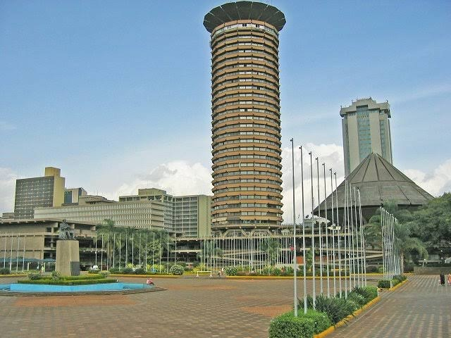

The Scale of the Problem
9 March 2027
- Opening plenary & continental address
- Epidemiology & burden of kidney disease
- Ministerial roundtable
Full session list to be published
The cost of kidney disease is a bill that Africa cannot afford to keep paying. The Africa Kidney Health Summit convenes leaders and stakeholders from across the kidney health ecosystem to advance a shared agenda for prevention, early detection, access to care and policy action.

What sets this summit apart isn't the topic — it's the structure. Every session is built around three commitments:
Governments, clinicians, researchers, industry and civil society in the same room.
Sessions designed to produce commitments, not just conversations.
Solutions designed for the realities of African health systems.

Africa's leading kidney health institutions, ministries and clinical societies.
The summit programme is built around the four priority areas that will shape the next decade of kidney care on the continent.
The full three-day programme will be published here ahead of the summit.
9 March 2027
Full session list to be published
10 March 2027
Full session list to be published
11 March 2027
Full session list to be published
Confirmed speakers from across the continent and international partners.
 🇰🇪 Kenya
🇰🇪 KenyaChief of Nephrology, Nairobi Transplant Institute
 🇬🇭 Ghana
🇬🇭 GhanaHead of Nephrology, Accra Regional Hospital
 🇳🇬 Nigeria
🇳🇬 NigeriaHead of Paediatric Nephrology, Lagos Children's Hospital
 🇹🇿 Tanzania
🇹🇿 TanzaniaDirector, Global Dialysis Outcomes Registry
 🇪🇬 Egypt
🇪🇬 EgyptSenior Researcher, Cairo Kidney Institute
 🇿🇦 South Africa
🇿🇦 South AfricaDirector, National Renal Care Programme
 🇸🇳 Senegal
🇸🇳 SenegalLead, West Africa Kidney Screening Initiative
The summit is open to everyone working to improve kidney health across the continent — from ministries and clinicians to students, advocates and industry partners. All are welcome at the same table.
Registration is open to all kidney health stakeholders. Group and institutional bookings are welcome, and the secretariat can assist with custom arrangements. Email admin@kidneyhealth.africa for assistance.
Registration is handled on the summit's official ticketing platform. Select your delegate category, confirm your details and choose a payment method there.
Choose your delegate category and how many places you need. Group bookings are welcome.
Provide your details and preferred payment method. Institutional invoicing is available.
Your reference is issued instantly. Invoice and confirmation pack follow within 48 hours.
Opens the official ticketing platform in a new tab · no payment required to reserve your place
Exhibition space and partnership packages for device manufacturers, diagnostic companies, pharmaceutical firms and service providers.
Shell-scheme booths with fascia board, power point and delegate passes — direct floor access to book meetings with clinicians, procurement leads and ministry delegations across the three days.
Premium booth placement, logo on official materials, breakout session slots and keynote mentions — tiered packages for organisations seeking a strategic, high-visibility presence.
Africa's premier conference venue, with full accessibility, translation facilities and delegate services — and a secretariat on hand for registration, sponsorship, media or programme enquiries.
Registration opens 08:00 EAT on 9 March. Opening plenary begins 09:30 EAT.
Harambee Avenue, Nairobi. 20 minutes from Jomo Kenyatta International Airport.
Visa letters, hotel block bookings, airport transfers and accessibility support.

Africa Kidney Health Alliance
Nairobi, Kenya
Be in the room. Book your delegate place or request partnership information.
9th – 11th March 2027 · KICC, Nairobi, Kenya